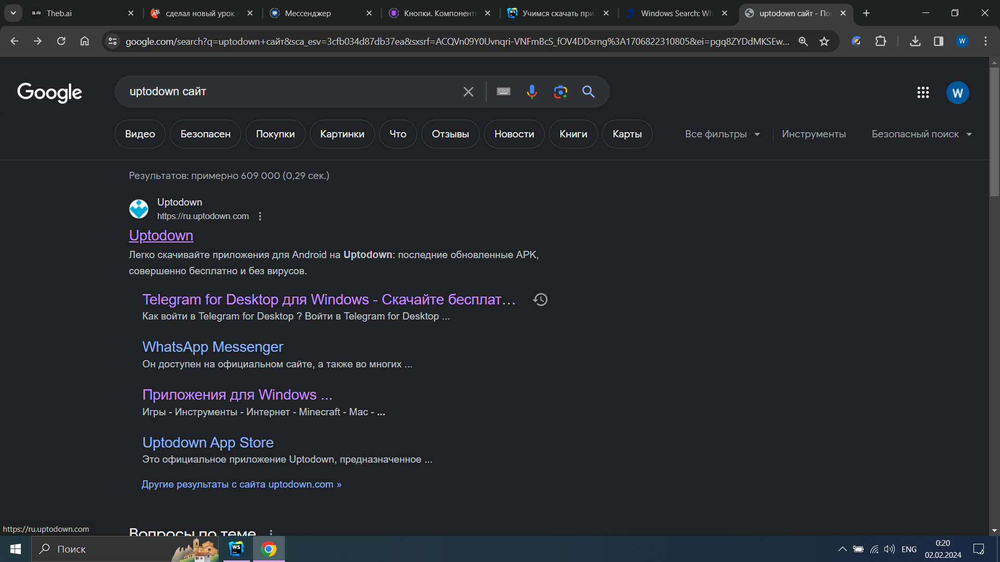
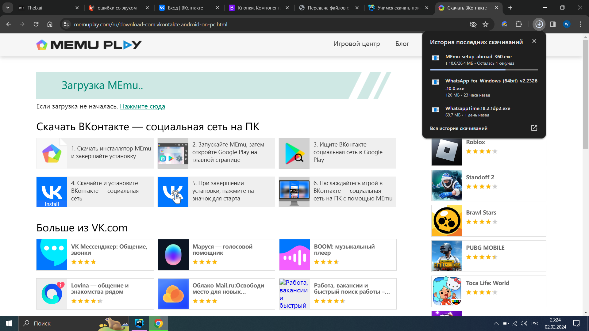

Безопасное скачивание приложения
Вместо того чтобы рассказывать для чего нужно скачивать какие-то приложения, я покажу минусы и плюсы:
Плюсы скачивания приложений:
- Удобство: Приложения помогают нам выполнять различные задачи быстро и легко.
- Связь и общение: Благодаря приложениям мы можем легко обмениваться сообщениями, фотографиями и видео, независимо от расстояния, а также находиться на связи в социальных сетях.
Минусы скачивания приложений:
- Безопасность: Некоторые приложения могут быть небезопасными, поэтому важно скачивать и устанавливать приложения только из надежных и проверенных источников.
- Ограниченные ресурсы: мы не можем скачивать много приложений. Представим сумочку, вы можете положить туда определенное количество вещей, так и с пк и ноутбуком, определенное количество.
Приложения скачиваются через браузер.
Научимся скачивать приложение:
- Зайдем в браузер.
- В поисковой строке пишем сайт: softpedia или перейдите по ссылке https://www.softpedia.com/ 
- Дальше нажмем на кнопку Windows. 
- В поисковой строке пишем приложение которое хотим скачать и нажимаем кнопочку GO.
- Заходим на первую ссылку и ищем кнопку на которой будет написано: Downland(скачать).
- Нажимаем ее